| 日付 | 2009年3月28日（土） |
|---|---|
| 山域 | 駿河 |
| メンバー | 単独 |
| 山行形態 | 日帰り |
| アクセス | 電車、バス |
| ルート (Map) | 徳間→夕陽川橋→篠井山→坂本→井出駅 |
山梨県に篠井山という山がある。
歴史のある山で前々から少し気になっていた。
交通の便が悪いのが難だが、少し遠出して行って見る事にする。
JR身延線の内船駅からバスに乗って登山口をめざす。
車窓からは丸い頭の篠井山がよく見える。
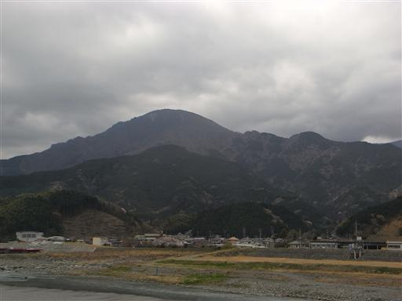
10:34 徳間バス停到着。標高215m。
バスの料金は100円と良心的だった。
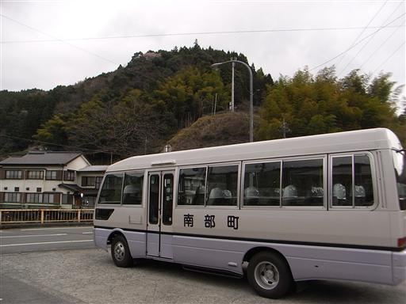
バスの終点から登山道入口までは、車道を1時間半ほど歩く必要がある。
登山前にこんなに車道を歩かされるのは初めてかもしれない。
しかも工事用のトラックが頻繁に通過する。
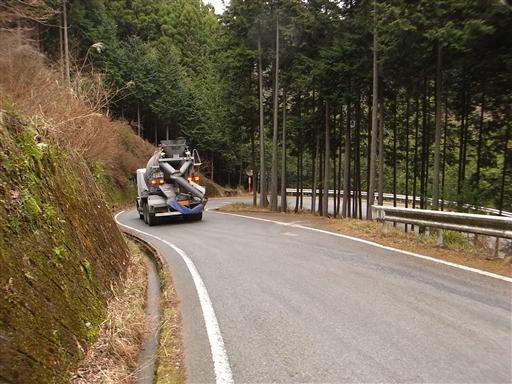
車道脇に流れる小さな滝。歩いているからこそ見つけられる滝だ。

途中で七ツ釜の滝というものを見つける。
せっかくなので寄って行くことにする。
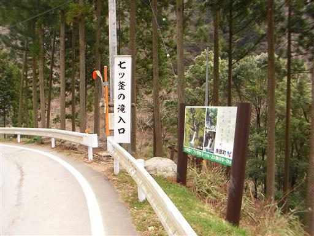
急な階段を5分ほど下りていく。
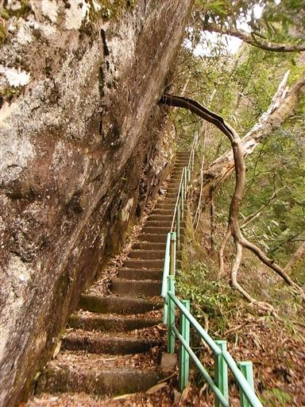
しばらく歩くと吊橋が見えてくる。
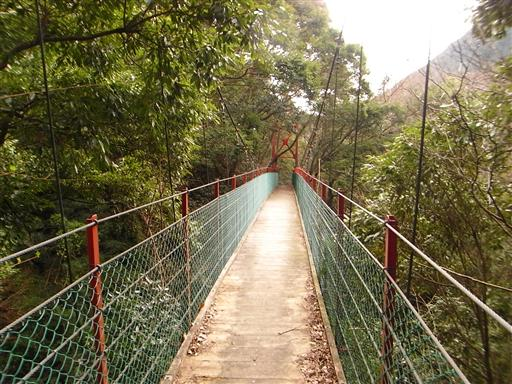
遠くの方に滝が見えるがあれが七ツ釜の滝だろうか？
滝入口と書かれていた割には、今一滝がきれいに見えるポイントがない。
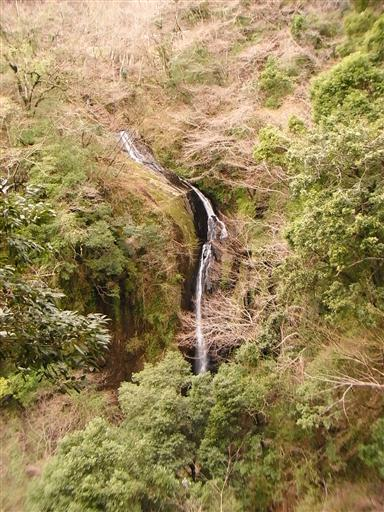
足元を見ると、かろうじて美しい渓谷の姿を望むことができる。
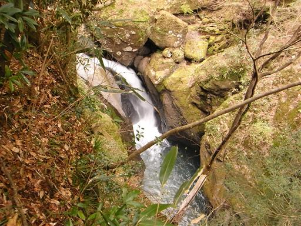
車道脇にはミツマタの花がたくさん咲いている。
大して美しい花ではないが、あちらこちらで見られる。
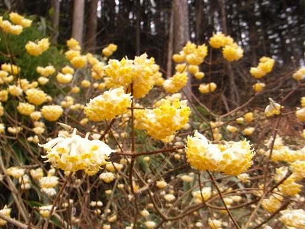
歩くこと1時間半、ようやく登山道入口に到着。
駐車場にはすでに多くの車が停まっている。
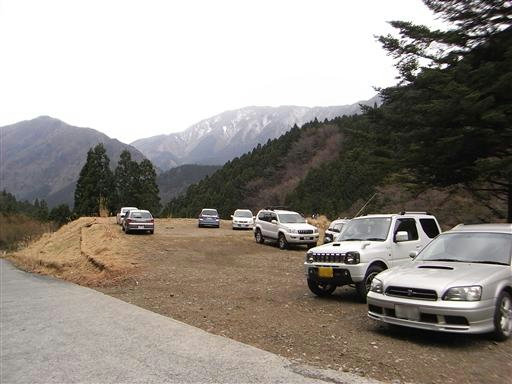
登山道入口付近にも美しい滝がある。
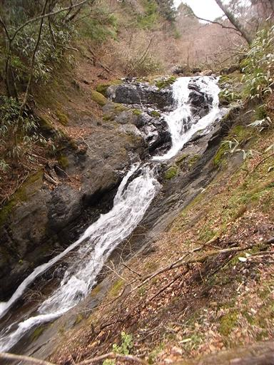
登山道脇には山頂までの距離を示す標識がある。
100m毎に置かれていて少々過剰な気もするが、現在地が把握できるのはありがたい。
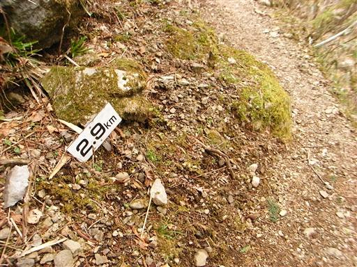
登り始めたときから、次々と下山してくる人とすれ違う。
登山道入口に到着したのが12時を過ぎていたので仕方がない。
多くの人はマイカーで来て朝から登っているのだろう。
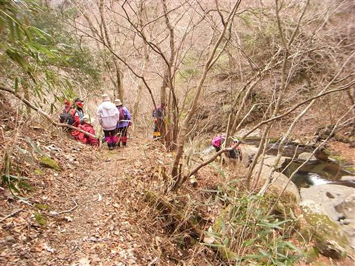
登山道脇にも美しい滝が流れている。
沢沿いのなかなか気持ちのよい登山道だ。
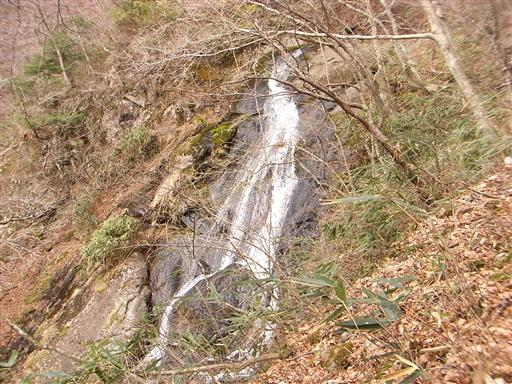
卵のような丸い形をした石。ここまで丸い石は珍しい。
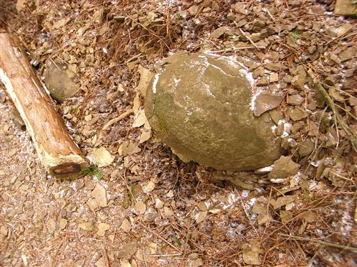
山頂直下まで来ると、もうすれ違う人もいなくなる。
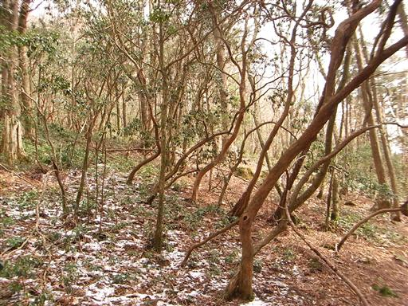
13:32 篠井山山頂到着。標高1394m。
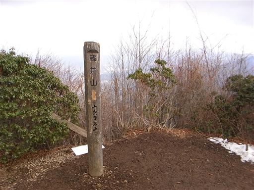
登山道は賑わっていたが、山頂は誰もおらず閑散としている。
全員下山した後のようだ。
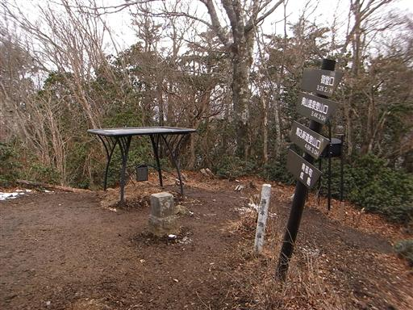
今日は天気が思ったより悪く、展望はほとんど開けない。
残念ながら富士山の姿も全く見えない。
安倍奥東山稜の山々を望みたかったのだが、そもそも樹林に覆われていて見えなかった。
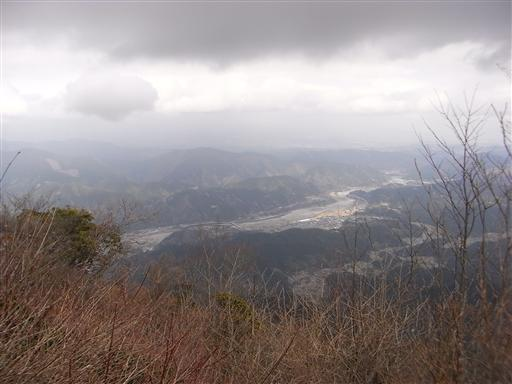
南峰を下山して北峰をめざす。北側斜面は雪が残っている。
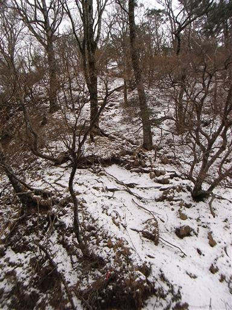
篠井山北峰に到着。こちらの山頂にはお堂が建っている。
ここも展望は全く開けない。
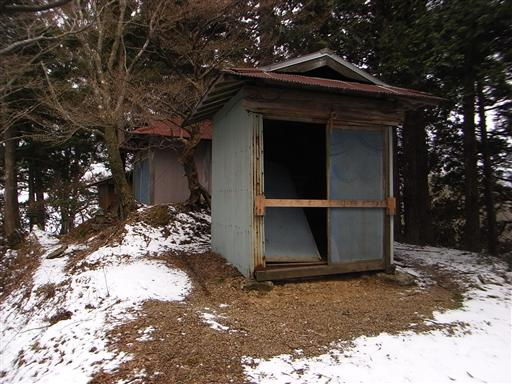
御堂に下る道を下山道に選ぶ。
登りに使った道以外は、すべて上級コースと標識に書かれていた。
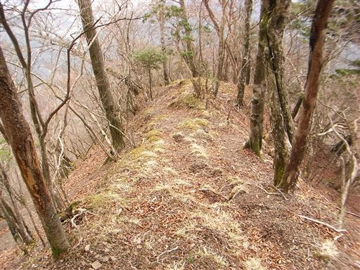
所々踏み跡が非常に見えにくくなる。
ほとんどの人はマイカーを使った往復登山で、こちらの道はほとんど歩かれてなさそうだ。
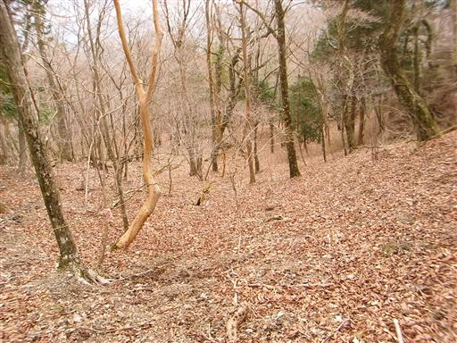
岩の表面に根を伸ばした不気味な木。
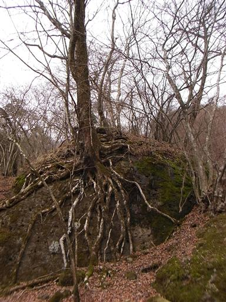
踏み跡が薄かったり、急傾斜だったり、道が細かったりと、
なかなかマニアックな登山道だ。
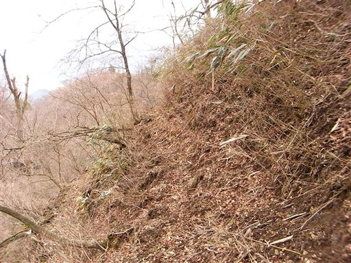
途中で植林地帯の伐採地に出てくる。この辺りは登山道が特に分かりにくい。
ここまで下山すると尾根は無数に分裂し、地図を見てもどこを歩いているのかさっぱり分からない。
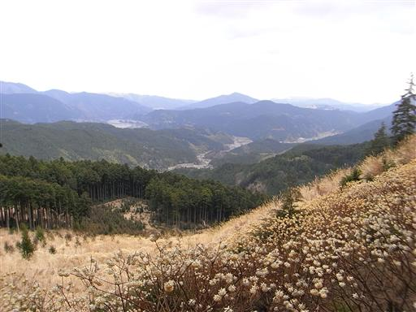
少々迷ったが、無事、正規の登山道入口に下山する。
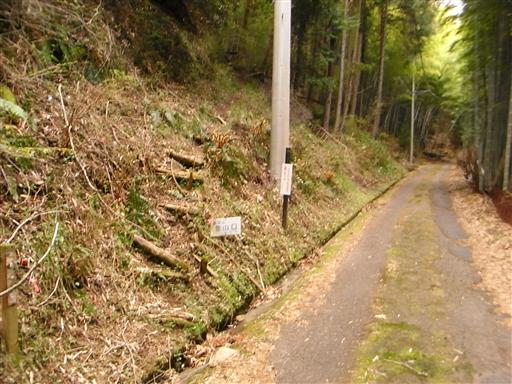
15:55 坂本バス停到着。
バスの時間まで40分。待ってもいいが、ここから駅まで徒歩40分程度なので歩くことにする。
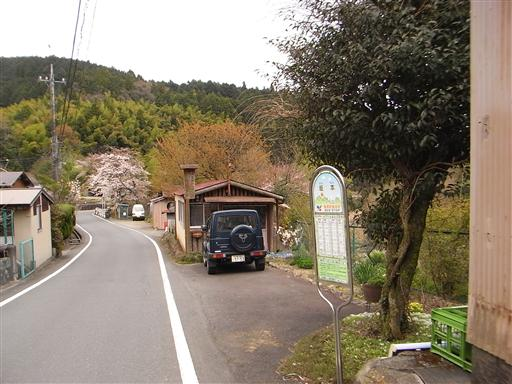
振り返ると篠井山がよく見える。
特別高い山ではないが麓からはよく目立つため、古くから崇められたのだろう。
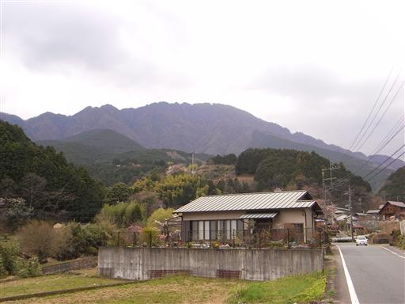
車道脇に不気味な石像を見つける。
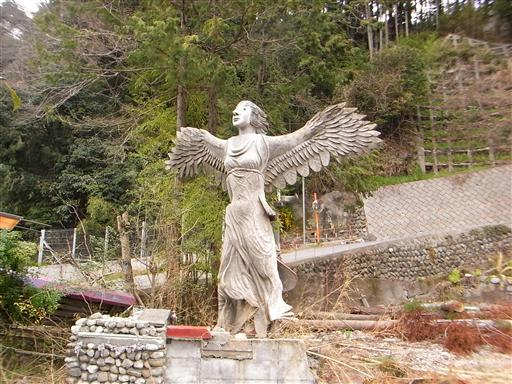
石像があった敷地の入口と思われる場所。
相当に趣味の悪い人が住んでいたのだろうか…
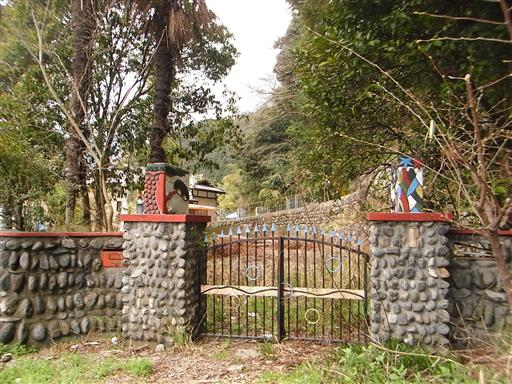
道の駅・とみざわに到着する。タケノコの町らしく、塔がタケノコの形をしている。
何か買って帰ろうと思ったが、クレープ屋の露店が1つあるだけ。
なんとも寂しい道の駅だ。
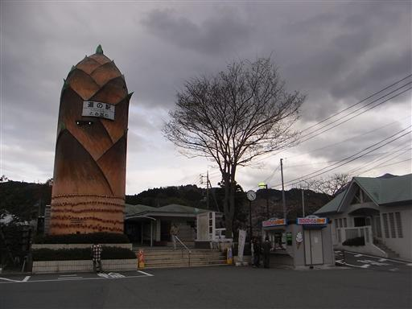
16:56 井出駅到着。標高175m。
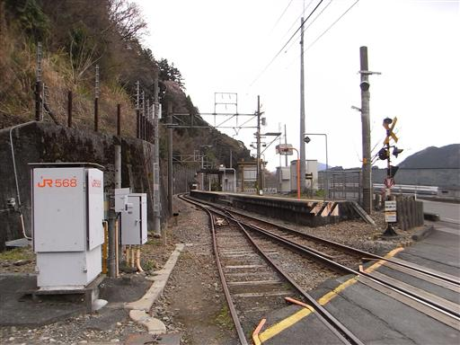